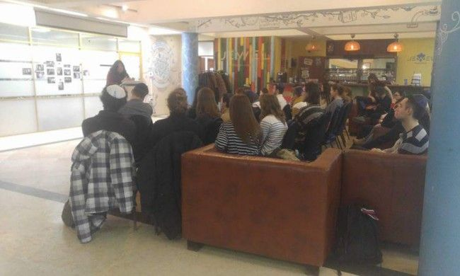

Assimilation: The “Evil Perpetrator” Who Wiped out Twelve Million Jews
Thirty years ago, the Rebbe already foresaw what Miriam Portnoy of Beitar Ilit would be dealing with today. She doesn’t stay cocooned in her peaceful, religious part of Eretz Yisroel; she keeps going back to her birthplace in order to lay foundations for Jewish homes and to save Jewish youth from assimilation. * The story of a shadchanis who sometimes also pays for the wedding.

For many years now, Chabad shluchim have been fighting assimilation and providing Jews all over the world with the understanding of what it means to be a Jew. Miriam Portnoy is familiar with assimilation from her home:
“I grew up in Russia with Jewish parents who did not keep any Torah and mitzvos. My grandmother, a’’h, was the great-granddaughter of the Admur of Tolchin and attended a religious school for girls, but the Chassidus was destroyed in the Holocaust. My grandmother was saved because she moved to Ukraine, but after the war Judaism was no longer out in the open in the Soviet Union. I was the 13th child and the youngest in the family. Although my parents were not religiously observant, it was important to them to have a large family, but out of 13 children, only my sister and I did not assimilate.
SIXTY CHUPPOS
Miriam is one of our important ambassadors in Russia, who is mekarev young people, takes care of shidduchim for them, and doing what she can to minimize assimilation. She works for Yachad and tells us how it all began:
“Thirty years ago, in 5748, I was at the Rebbe for dollars. I received a dollar and a bracha and kept walking. Suddenly, the Rebbe called me back, gave me another dollar, and said that I need to be involved in spreading the wellsprings and building families among Russian Jews. At that time, I was busy raising my own family and nearly forgot about this.
“Years went by, the children grew up, I got divorced and remarried someone from Russia and began getting involved with shidduchim. With Hashem’s help, I have been able to build a second home and do the things the Rebbe asked of me.
One day, Rabbi Drutz, director of the Yachad organization which is a branch of Ohr Avner, asked me to work for him. The organization operates all over Russia, arranges seminars and classes and remunerates handsomely the young people who consistently attend classes at least once a week, by allowing them to participate in a luxurious group trip to Europe in the summer. R’ Drutz asked me to join the week-long trip to Europe as a shadchanis and I agreed. The trip was intensive and exhausting. I spoke endlessly with many young people and returned to Eretz Yisroel completely wiped out. People began contacting me and connections were developed.
The former Soviet Union has Jews from various countries including Russia, Ukraine, Georgia and Bukhara. Most of the time the shidduchim I make have at least one Russian. 80% of my shidduchim are mixed, i.e., the couple is not from the same country. Since I started, I have made 60 matches.”
THE TERRIFYING SCOPE OF ASSIMILATION
After the trip to Europe, ten months passed and R’ Drutz asked her to join the next trip. This time, she first had to build a database of shidduch candidates and commit to going afterward, for at least a week out of every month, to every place in Russia that has a Chabad House, to meet with shluchim who work under Rabbi Berel Lazar, shliach and chief rabbi, and get to know Jewish youth.
“This project was just for me. I went all over lecturing about what is a Jewish home, what is a Jewish match, what is Jewish identity, and what is needed to build a Jewish home. Most young people lack even the most minimal understanding about the significance of their being Jewish. The facts are sad: before the Holocaust there were about 18 million Jews in the world. After the war, only 12 million remained, because six million were murdered. Today, despite natural growth that should have doubled and tripled the number of Jews in the world (fact: 70 years before the war, there were six million Jews and within 70 years, we grew to nearly 18 million), 70 years after the war there are only about 14.5 million Jews in the world. Where did the millions of Jews go that we should have had?
“I present these astonishing facts to the youth and ask them, ‘Who is responsible for this? Who is the evil perpetrator who killed them all?’ And then I explain the massive scope of the effects of assimilation. The math is simple, if a man marries a non-Jewish woman, their children are not Jews, that’s the end of the line.
“In Russia, there are over 40 Chabad Houses. I am in each city two to three times a year and know the young people personally. I talk to them and correspond with them.
“My educational training includes mediation and coaching with Rabbi Arad, mediation at Michlala in Yerushalayim and psychotherapy at Ohr Chaya with an emphasis on mediation before and after marriage, and communication between parents and children, and between the parents themselves – all in all, how to build a healthy family together. All my studying was meant for one goal; to work on shidduchim in a professional and effective way, especially under complicated circumstances in Russia.”
Mrs. Portnoy points out that the situation there isn’t simple. In addition to assimilation, the institution of the family is shrinking because most young people opt not to marry, since the world today is faster and very interesting and decisions are made based on what suits or doesn’t suit me. Even among those who do marry, there is a high divorce rate as success in marriage requires proper communication and so, her professional training included learning about communication.
THE JEWISH REPUBLIC WITH ALMOST NO JEWS
“I was once in Birobidzhan, the place where Stalin planned on having a Jewish republic. Ironically, all the Jews there assimilated. There is barely a minyan there, which we helped build together with the young Lubavitcher shliach.”
MARRIAGE COUNSELOR
Aside from shidduchim there is shalom bayis work “which is no less important,” emphasizes Miriam. “Many couples have shalom bayis problems but not all of them ask for help. The divorce rate is very high and unfortunately, it is rare to find a family with two Jewish parents.
“Once, in Belarus, a woman said to me in despair, ‘You fell down to me from heaven. I am married for twelve years with three children. My husband left the city a year ago and I want to travel with you to the city where he is because I really want shalom bayis.’ We went to that city and were able to get them together after a year of not seeing one another. For two days we held some deep discussions. They cried and said things that neither had ever heard from the other. She is waiting for me to come again so we can continue the process that will, with Hashem’s help, end up with a reunification.”
About eight lecturers work for Yachad, who travel around Russia, each with his unique topic. Miriam’s field of expertise is first and foremost preventing assimilation, followed by shidduchim and building Jewish homes. Through her talks and meeting Jews of all ages, she teaches them how to choose a spouse, and how to build ties with the spouse and his parents. “For example, it’s accepted that a girl marries with the preconceived idea that she will hate her mother-in-law, even if she is a good person. So I teach that thanks to this woman, you have a husband and children; conversely, thanks to your daughter-in-law, you have grandchildren.
“The halachic problems need to be explained. I explain things through personal conversations. There is so much work to do,” she concludes with a sigh. “From the moment I arrive at the shul by taxi until I leave two or three days later, I don’t have a free minute. It is not easy finding them a match. It is hard to find a Jewish couple who are suited to one another in age and circumstances, so I need to look for shidduchim in other cities too. Otherwise, it is likely they will marry local non-Jews. I found the other half of some couples in Eretz Yisroel and they made aliya, and there are older couples for whom I raised the money and arranged everything, from the dress to the wedding with music. I use online communications to ask for help from whomever is willing to help.”
You are all also invited to help wipe out assimilation which exists everywhere in the world and, unfortunately, in Eretz Yisroel too; to strengthen Jewish identity, build Jewish homes, and hasten the building of Zion and Yerushalayim with the hisgalus of the Rebbe with the true and complete Geula.
Miriam concludes:
“We are the last generation of galus and the first generation of Geula. So, on the one hand, we see how technology and the newest technological breakthroughs help spread Torah and Chassidus and the Besuras HaGeula. On the other hand, we still need to remind Jews that they are Jews and protect the Jewish people from assimilation by making proper, halachic marriages.
“They say about Rabbi Levi Yitzchok of Berditchev that when he arranged a match for his son, it was written in the wedding agreement that the wedding would be in Berditchev. Rabbi Levi Yitzchok read the agreement and dismissed it because Moshiach would come before the wedding would happen and the wedding would take place in Yerushalayim! It had to say that the wedding would be in Yerushalayim, and if Moshiach still hadn’t come by then, only in that case would the wedding be in Berditchev. His emuna in the revelation of Moshiach and the building of the Mikdash was so strong that it was clear to him that the wedding would be in Yerushalayim.
“Although there still exists plenty of things that are not good that are taking place in the world, we still continue to happily build Jewish homes and raise Jewish families. Every Jew has a portion in the World to Come and our job is to bring Moshiach and the Geula wherever we are.”
SAGA OF A SHIDDUCH
A Rebbetzin from Odessa once told me about a 24 year old girl who looked a lot older than her age. She grew up in an orphanage in Charkov from a very young age after her parents were killed in a road accident. She lived with a gentile and had a son. She then became attached to another gentile and had another son. She was in terrible straits. The community arranged a job for her at the orphanage and a room to board in, for her and her children. There, she learned halacha and the Jewish way of life and she became interested in marrying a Jew.
In the meantime, in Eretz Yisroel, a rav told me about a Russian widower in his community who was 38. His wife died when giving birth to her second child and left him with two children: a 9 year old with special needs and a year old baby. He was in a terrible situation and his state of mind was poor; he could not work.
The widower came to me with the two children to talk about marriage, because he had no place to leave them. His suit looked like it was taken from the garbage and the two children stood next to him, one screaming nonstop and the other one crying the entire time and wanting something. Beyond all this, I saw an angel with pure eyes; but his situation was dire.
I wondered how on earth I could find a person like this a shidduch. Nobody would be willing to marry him! Then I remembered the young lady in Ukraine. True, she was 24 and he 38, but she looked a lot older. I suggested the shidduch to both of them, giving them two weeks to talk on the phone and decide whether they wanted to meet, and if not, to stop talking.
Within two weeks, she told me that they had decided to meet in Eretz Yisroel. Great! But how would she get to him? What’s the problem, you ask, just buy a ticket. But she had no money. I spoke with him and he said, she is my other half but I don’t have money either. Wonderful, they have this in common … What can I do? I wrote on the online forum that really is a huge help in my work, “Who can help a Russian orphan who needs to get to Eretz Yisroel for a shidduch meeting and has no money.” All kinds of people responded, and one fellow wrote that I had once helped him in Russia with personal matters and that he now had a travel agency and was willing to donate a ticket!
I wrote to the Rebbe with her and opened to a letter with brachos and that it is a proper thing that could be successful, in a good and auspicious time, etc. Excellent. The ticket was purchased and he went to the airport to welcome her with his two children. He had a car from the days of the Palmach (i.e., 1940s), four wheels and a steering wheel; the rest was one big mess. She was supposed to land at nine in the evening. An hour and then two hours went by and she did not come out. He called me at 11 because she didn’t have a phone and he was waiting for two hours already and the kids were going crazy.
I called border control and found out that they were holding a woman who had no identifying information and only spoke Russian. She said she had come to Eretz Yisroel to marry and they understood that she had left her two children in Ukraine and they wanted to send her back there. I said to myself, the Rebbe gave a bracha, and I began telling them the whole story.
Finally, at six in the morning, they let her leave. In the meantime, her blood pressure had risen very high. She comes out and sees someone who looks like he does, and he is meeting her with the two problem children thrown in as a bonus, who have not slept the night and are really going nuts. He also hasn’t slept all night. She is crying and red and he looks like he looks … and that is how they met. She suddenly noticed the two out-of-control kids and she wanted to go back to Ukraine.
He took her in his “car” to his yishuv, to a family that agreed to host her. An hour later he called and said, “This is my other half. I decided I want to marry this woman.” I told him, “You’re exaggerating. You decided so quickly?! Go to sleep and tomorrow meet her properly.”
They had a month to spend together. Their meetings were generally with his children. Still, after a week, they decided to marry. I said, “Fine, you need to open a file at the Rabbanut.” As it turned out, that she had no documents. We first had to ask for them to be sent from Ukraine, and then it turned out that having grown up in an orphanage, all the papers had been lost and they had no proof that she was even Jewish.
We were distraught. Once again, I wrote on the forum describing the situation. I sent messages to rabbanim who give advice but none of it was practical under the circumstances. We dug around and it turns out that before she lost her parents in the accident, she had a grandmother who flew to the US whose whereabouts were unknown. Perhaps, in Charkov, documentation about the grandmother could be found? Where did she live and when, and also documentation about her ethnic origins, but they would not release the documents to just anyone. They could be obtained only through a lawyer, but she was in Eretz Yisroel. What should we do?
I posted on the forum again, “I need a lawyer.” Then came a message from a friend who lived in Moscow thirty years before and she wrote that she has an uncle, a lawyer, who lives in Charkov who could do it. The lawyer was contacted and within two days he found the documents. We asked him to send them immediately. He said, “No problem, but first pay me $300.”
I wrote again, “Dear friends, this is the situation and a couple urgently needs help to marry and to pay a lawyer $300.” Once again, someone was willing to help and he transferred the money directly to the lawyer in Charkov. A chain of miracles …
The lawyer sent the documents by express mail and they went to the Rabbanut to open a file. That evening she went back to Ukraine because the month was finished and she had children waiting for her. It took two weeks until they were approved by the Rabbanut and in the meantime, they set a date for the wedding. Of course, there was no money. I arranged a ticket from the travel agent again, for the orphan bride with two children, and rented a hall in Beitar, but I didn’t have the money to pay for it.
My husband has a friend who has a band and he agreed to play for free. A single, 40 year old friend, did the kalla’s makeup and hair, with the wig I gave her as a gift. Another older single, 36 years old, bought her a bouquet. Another older single prepared cakes. Another woman went shopping with her. We took a gown from a gemach. Another woman from Beitar decorated the hall with balloons in the most amazing way; I never saw such beauty at a wedding before. In short, I made them a beautiful, respectable wedding. All the money had to come out of my pocket, but in the end people contributed.
Within a year, the makeup woman got married. The 36 year old also married, and whoever was involved with this wedding received enormous blessings from heaven.
The couple flew to Odessa and began taking care of things at the interior ministry. It turns out that without the permission of the fathers of her two children, they could not become Israeli citizens. I had a lawyer take care of it.
A year later she gave birth to a daughter whom they named Miriam, after me.
Beis Moshiach (staff). "Assimilation: The “Evil Perpetrator” Who Wiped out Twelve Million Jews." Beis Moshiach, no. 1117 (May 8, 2018).